24 일
11 국가
1 인당
US $ 3,096.00 부터
여행 코드: EEWSLL-1
여행 노트 다운로드-
날짜 및 가격 확인
2021년 11월 11월 30일 화 ~ 12월 23일 목 윈터 스피릿 2021-22 US$3,273.00 2021년 12월 12월 14일 화 ~ 1월 6일 목 윈터 스피릿 2021-22 US$3,812.00 2021년 1월 1월 4일 화 ~ 1월 27일 목 윈터 스피릿 2021-22 US$3,524.00 2021년 2월 2월 15일 화 ~ 3월 10일 목 윈터 스피릿 2021-22 US$3,096.00
여행개요 |
|
 밤 밤 |
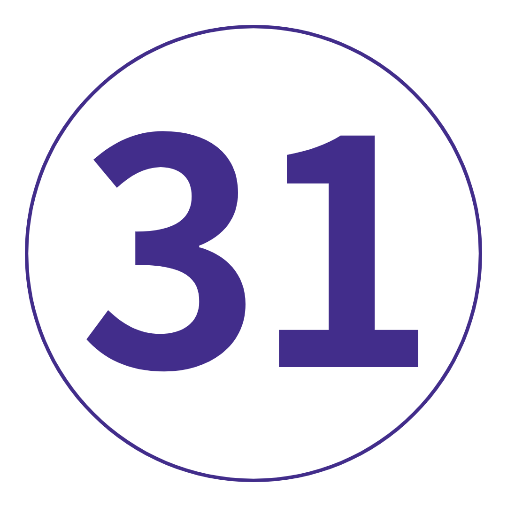 식사 |
| 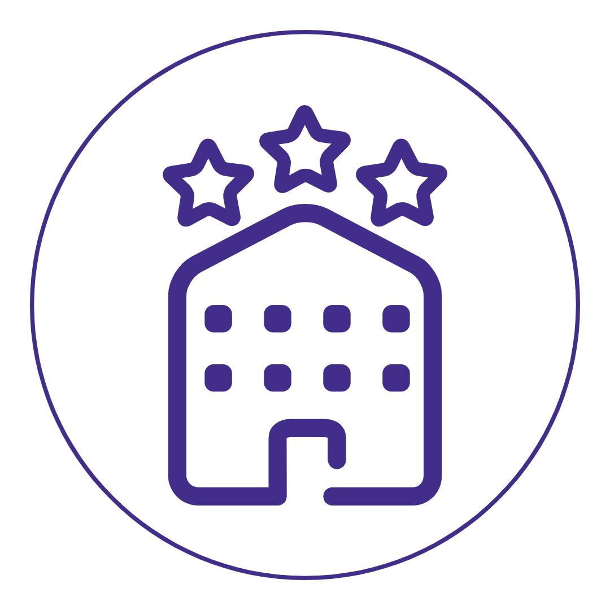 호스텔플러스 | 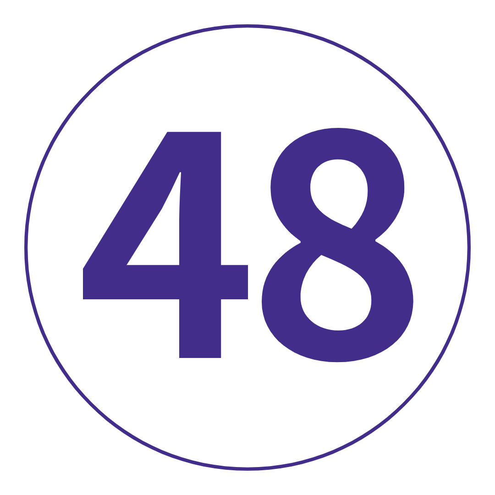 최대 인원 |
| 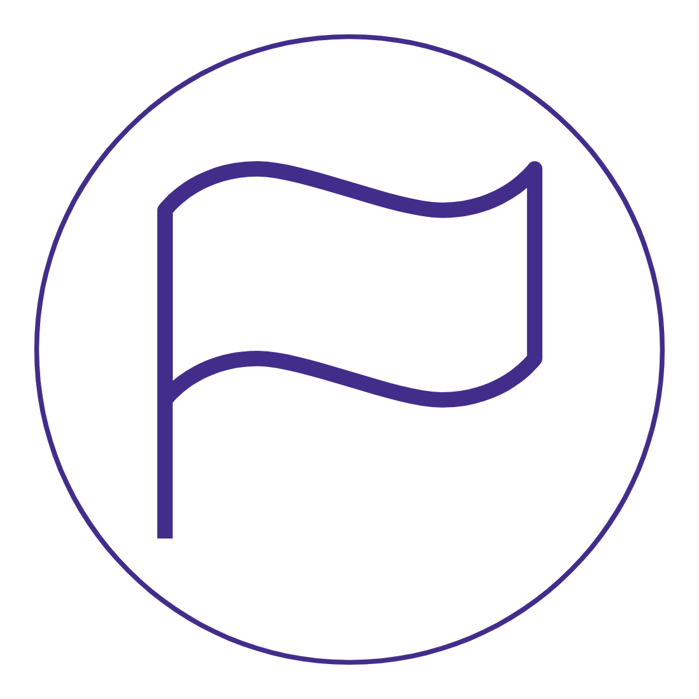 여행 가이드 | |
| 시 작 | 06 : 00 런던 (또는 17 : 00 파리) |
| 종 료 | 09 : 00 암스테르담 (또는 21 : 00 런던) |
여행 개요
지도
나를 위한 여행인가? 모험심. 눈부신. 마법 같은.
24일 동안 12개국을 가십시오. 버킷리스트 명소, 입이 떡벌어지는 알프스 풍경, 가보지 못한 발견을 모두 추가하세요.
양털 스카프로 싸서 핫 초콜릿에 담그고 그 위에 반짝이는 조명을 던지십시오. 무엇을 얻습니까? 평생 지속되는 영광스럽고 영혼 가득한 유로 여행. 미친 여름 군중을 피하십시오.
당신의 사람들을 만나보세요. 그리고 이번 겨울 여행이 제공하는 모든 계절의 분위기를 만끽하세요. 이것은 당신의 기회입니다.
여행 일정
-
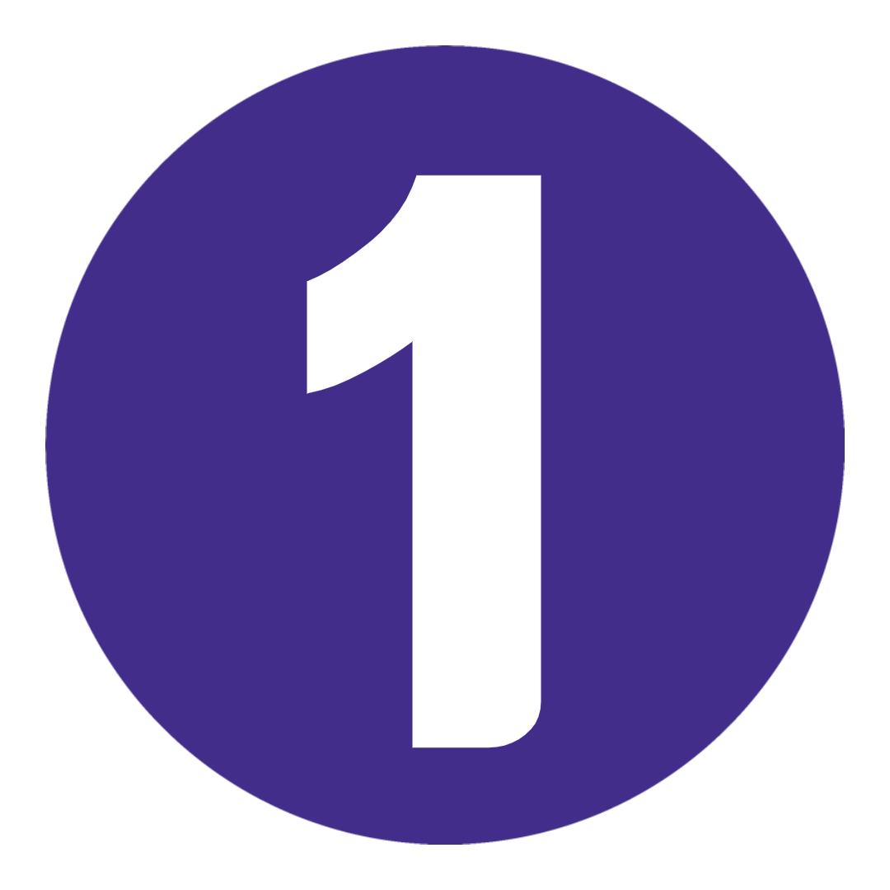 영국 런던에서 프랑스 파리로 (또는 파리에 합류)
일상을 뒤로하고 특별한 것을 발견할 준비를 하십시오. 우리는 일찍 길을 나서 영국 해협을 가로질러 운전할 것입니다. 라이드를 사용하여 봉주르와 실부 플레어를 닦고 멋진 AF 여행 동료를 만나십시오. 이게 다야! 코코 샤넬, 모나리자 및 세계에서 가장 맛있는 마카롱의 고향 - 파리는 패션, 문화, 군침이 도는 음식의 모든 것에 대해 유럽의 수도라는 명성을 얻었습니다. 오늘 밤 포함된 저녁 식사에서 진정한 프랑스 요리를 맛보기 전에 드라이브 투어에서 모든 쇼스토퍼를 확인하세요. 나중에 감사합니다.
키워드 공식 만찬 + 파리 드라이브 투어 -
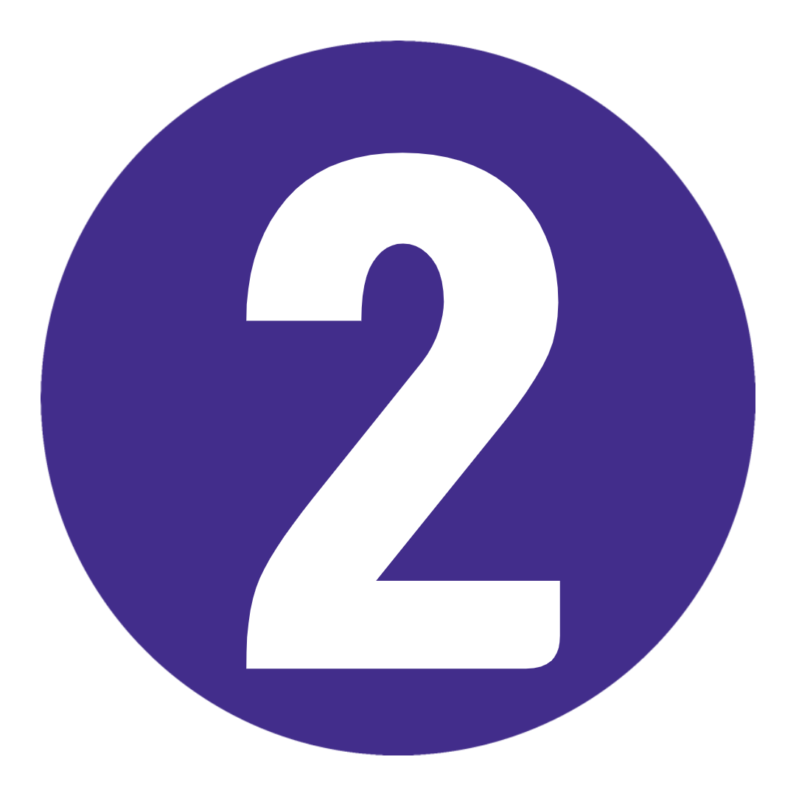 파리
네, 드디어 왔습니다. 최대한 활용하십시오! 트립 리더가 추천하는 곳에서 따끈한 페이스트리를 맛보세요. 루브르 박물관을 방문하여 Mona를 살짝 엿보세요(최고 팁: 미리 tix를 구입하세요!) 개선문 사진을 찍습니다. 샹젤리제 거리를 따라 힘들게 번 돈을 보내십시오. 아니면 혼자 나가 숨겨진 뒷골목과 카리스마 넘치는 현지 카페를 탐험해보세요. 차가움이 느껴지시나요? 옵션으로 제공되는 자전거 투어에서 다리를 따뜻하게 하세요. 세느강을 따라 강 유람선을 탈 수 있는 옵션도 있습니다. 오늘 밤, 카바레에 어울리는 드레스를 입으세요. 당신은 결국 파리에 있습니다. 아니면 몽파르나스 전망대로 올라가 왜 이곳을 빛의 도시라고 부르는지 알아보세요.
키워드 아침밥
추가 옵션 파리 카바레 쇼: €65부터 / 세느강 유람선: €10부터 / 파리 자전거 투어: €30부터 -
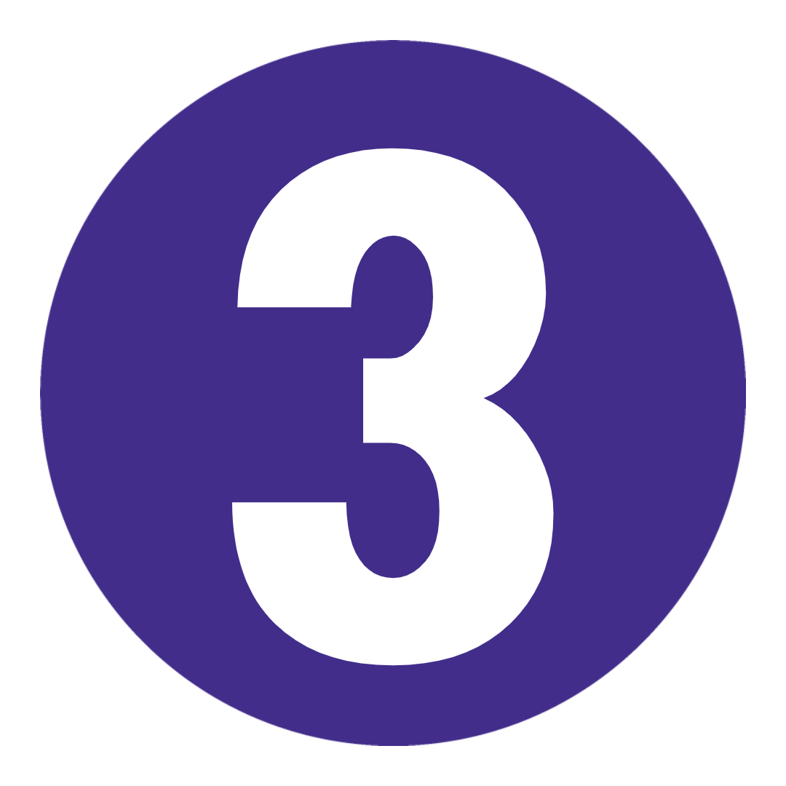 파리에서 스위스 알프스, 스위스까지
멋진 음악과 아름다운 전망 – 우리는 산으로 향할 때 눈 덮인 봉우리를 찾기 위해 파리 거리에서 거래를 할 것입니다. Toblerone 상자와 달리 스위스 알프스는 모두 완벽하게 정렬되어 있지 않으므로 약간의 드라이브가 될 것입니다. 그러나 당신은 눈치채기 위해 창문에 얼굴을 들이밀기에는 너무 바쁠 것입니다. 'Top of Europe', 72개의 폭포와 스위스에서 가장 큰 자연 보호 지역 중 하나인 이 곳은 오늘 밤 믿을 수 없는 융프라우 지역에서 잠을 자게 됩니다. 저녁 식사 후, 크림 같은 핫 초콜릿 한 잔과 함께 상쾌한(참고: 얼어붙은) 고산 공기에 앉아 있습니다. 이것이 우리가 온 이유입니다.
키워드 아침밥 + 공식 만찬 -
스위스 알프스
스위스 알프스에 Tinder 약력이 있다면 다음과 같이 읽힐 것입니다. 재미있는 야외 활동 애호가 – 함께 모험을 나눌 아드레날린 중독자를 찾고 있습니다. 오른쪽으로 스와이핑? 젠장 예! 융프라우반 철도를 타고 '유럽의 정상'을 선택적으로 방문하세요. Arnie처럼 만들고 완벽한 그림을 보려면 헬리콥터에 탑승하세요. 또는 더 모험적인 사람을 위해(읽기: 미친) 14,000피트 상공에서 비행기에서 몸을 던지지 않으시겠습니까? 장난. 오늘 밤, 갱단과 함께 저녁 식사를 하기 위해 다시 지상으로 내려간 다음, 도시로 향하여 김이 나는 글루바인 한 잔을 마시며 현지인들과 친해질 수 있습니다.
키워드 아침밥 + 공식 만찬
추가 옵션 융프라우('유럽의 정상')로의 경치 좋은 여행: 161.80 - 189.60 CHF / 스위스 알프스에서 스카이다이빙: 390CHF(추가 보증금 €50)부터 / 경치 좋은 헬리콥터 타기: CHF 195부터(추가 보증금 €20) -
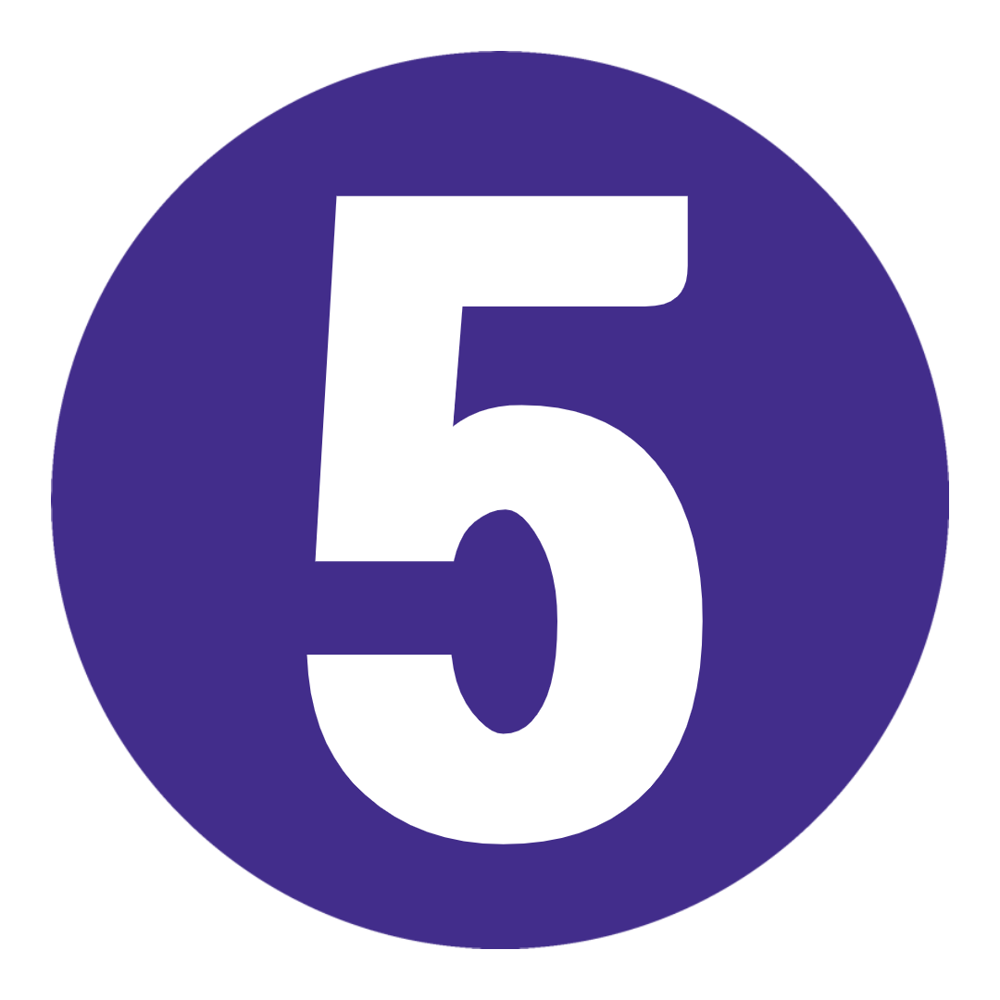 스위스 알프스에서 피사를 거쳐 이탈리아 피렌체까지
오늘 우리는 역사상 가장 유명한 사건 중 하나를 보러 갑니다. 사진을 찍고(아시는 분), 뚱뚱한 바지를 입고 플로렌스: 젤라또와 군침이 돌게 하는 토스카나 요리의 본고장입니다. 오늘 밤 저녁 식사 전에 Arno 강을 따라 서리가 내린 이 모든 것이 내가 여기에 온 것 같은 느낌을 받으십시오. 그럼: 누가 노래방이라고 했지? 기분이 든다면 나중에 술집에서 고전의 대결에 갱단에 합류하십시오. 또는 촛불이 켜진 아늑한 와인 바를 찾아 지역의 유명한 비노 로쏘를 맛보십시오.
키워드 아침밥 + 공식 만찬 + 피사를 방문하여 유명한 사탑을 감상하세요. -
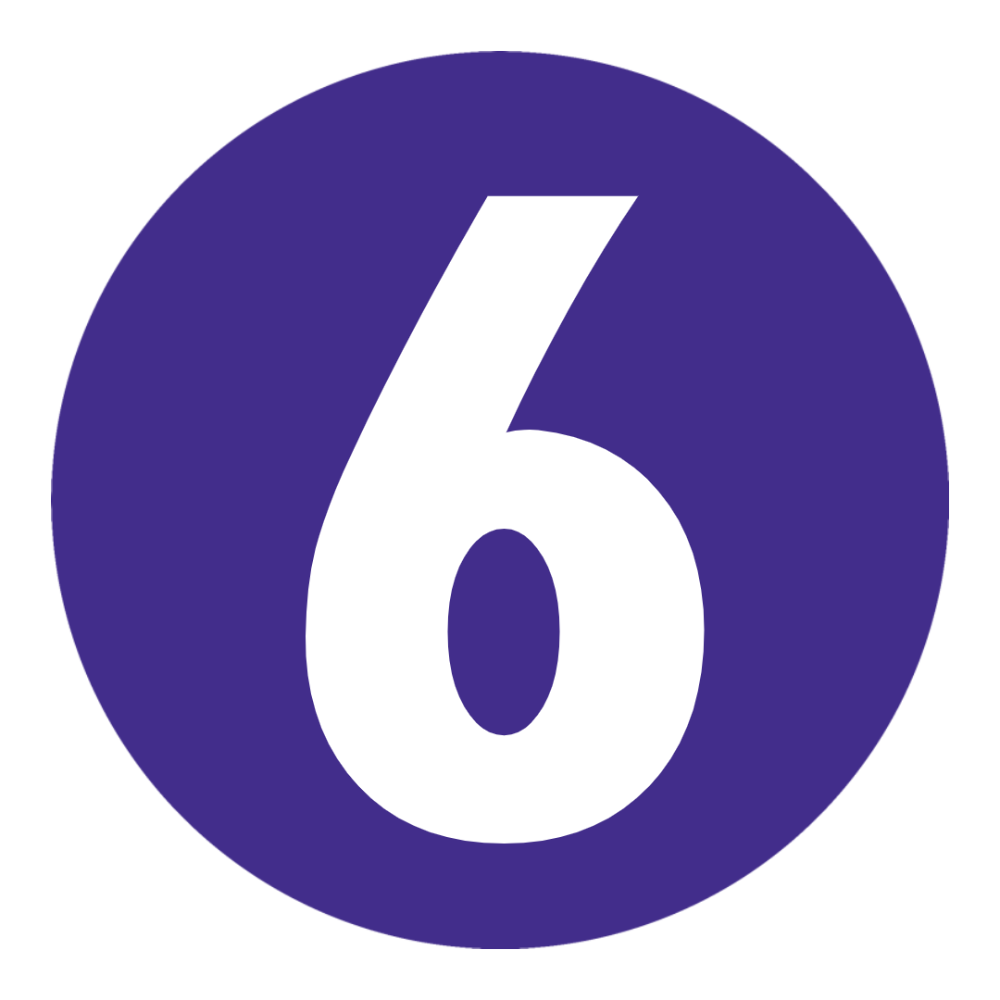 피렌체-로마
오늘 아침 우리는 이 문화의 수도에 대해 더 깊이 알아볼 것입니다. 지역 가이드와 함께 수세기에 걸친 역사를 거닐며 피렌체만이 제공할 수 있는 모든 예술적 매력과 눈부신 건축물에 흠뻑 빠져보세요. 우리는 말하고 있습니다: Uffizi 갤러리. 베키오 다리. 시뇨리아 광장. 그리고 압도적인 두오모. 그때? 라 벨라 로마가 기다리고 있습니다. 오늘 저녁 저녁 식사는 당신에게 달려 있지만 당신은 미식가를 위해 디즈니랜드에 있습니다. 의미? 모든 좋은.
키워드 아침밥 + 현지 가이드와 함께하는 피렌체 도보 여행
-
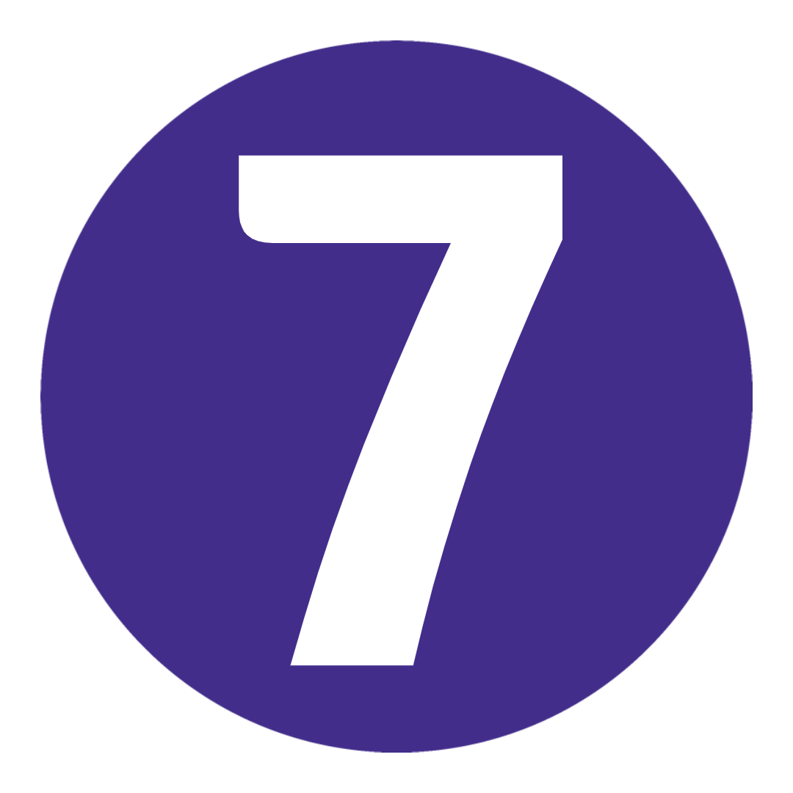 로마
오늘 아침에 무엇을 하느냐는 100% 당신에게 달려 있습니다. 그러나 몇 가지 제안이 필요한 경우 지원해 드립니다. 일찍 일어나서 바티칸 시국의 선택적 투어에 대한 축복을 세어보십시오. 로마 포럼과 콜로세움의 멋진 전망을 보려면 Capitoline Hill로 향하십시오. 그런 다음 에스프레소와 함께 그림 같은 광장에 자리 잡고 약간의 돌체 파 니엔테(맛있는 게으름)에 탐닉하십시오. 나중에 우리는 모든 도보 여행을 끝내기 위해 도보 여행에서 고대 건축물의 가장 큰 선수들과 만날 것입니다. 판테온을 지나고 스페인 계단에 앉지 말고 거대한 콜로세움을 둘러보고 하루가 끝나기 전에 트레비 분수에 2센트를 던지십시오. 이 장소가 더 좋아 보일 수 없다고 생각 했습니까? 2500년의 고대 역사가 크리스마스처럼 밝혀지는 것을 보고 다시 생각해 보십시오.
키워드 아침밥 + 로마 도보여행 + 로마 지하철 티켓
추가 옵션 바티칸 시국 가이드 투어: €45부터 -
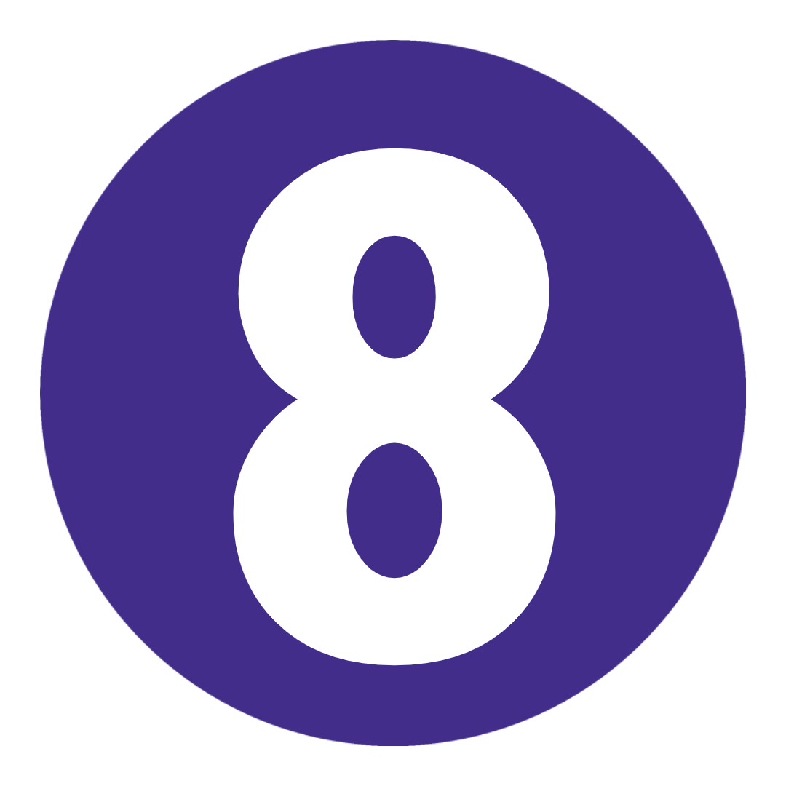 로마
이것은 당신의 모험입니다. 그래서 여기 나가서 당신의 일을 할 수 있는 24시간의 자유가 있습니다. 회오리바람에 휘날리는 베스파, 에스프레소, 두 뺨의 키스, 원하는 대로 피자로 하루 만에 궁극의 로마의 휴일을 만들어 보세요. Via Condotti에 들를 때까지 쇼핑하세요. 도시의 또 다른 전망을 보려면 Knights of Malta Keyhole을 사냥하십시오. 피자리움 본치(Pizzarium Bonci)에서 한 조각을 위해 점심시간 러시와 싸워보세요. 또는 Piazza Nuova(손에 핫 초콜릿, obvs)에서 모든 것을 중지하고 가져오세요. 오늘 밤, 그 뚱뚱한 바지를 털어내고 세계 최고의 파스타 알라 까르보나라를 찾으십시오. 여기에서 나온 것이므로 잘해야합니다.
키워드 아침밥 -
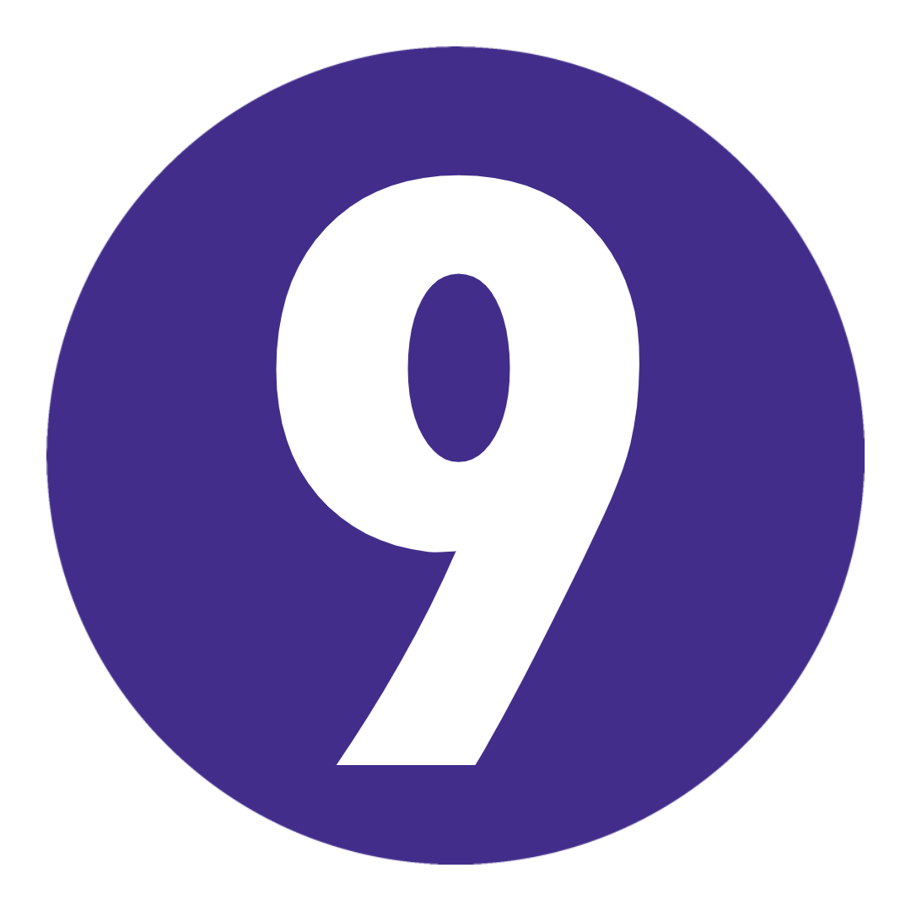 로마-베니스
거짓말이 아닙니다. 오늘은 장거리 운전을 해야 합니다. 지금이 새로운 친구와 스냅 사진을 공유하고 zzzz를 따라잡고 '집세'를 문자로 보낼 수 있는 기회입니다. 나중에 너무 바빠질 것입니다. 나중에 우리는 400개가 넘는 다리가 있는 플로팅 시티(Floating City)에 주차하고 비발디의 탄생지입니다. 비니를 착용하고 도보 여행에서 베니스의 일반적인 용의자가 누구인지 알아보세요. 우리가 말하는 산 마르코 광장, 도제의 궁전, 아카데미아 다리. 오늘 밤, 당신은 이 낭만적인 도시의 안개 낀 골목길과 반짝이는 광장 사이에서 자유롭게 길을 잃을 수 있습니다. 아직 시도하지 않은 맛있는 탄수화물이 많은 이탈리아 요리는 무엇입니까? 2개 주문합니다.
키워드 아침밥 + 베니스 버스 티켓 + 베니스 셔틀 기차 티켓 + 베니스 도보여행
추가 옵션 맞춤 여행 티셔츠 또는 후드티를 받으세요: 최저 €21 -
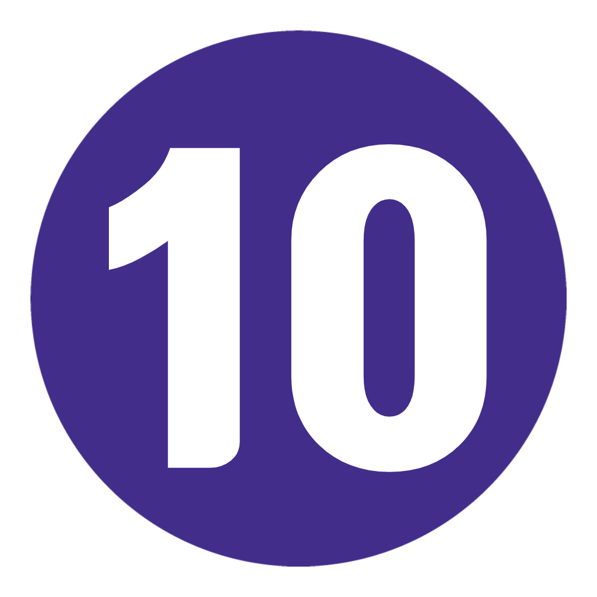 베니스
당신은 당신 자신의 자발적인-이것이 내가 여기 온 이유-를 할 수 있는 자유를 원했습니다. 그래서 여기 그것을 할 하루가 있습니다. 몇 가지 제안이 필요하십니까? 옵션으로 제공되는 곤돌라를 타고 유명한 리알토 다리를 지나갑니다. 서사시 Libreria Acqua Alta 서점을 찾는 데 시간을 보내십시오. 그런 다음 뜨거운 뱅 브륄레 한 잔과 함께 활활 타오르는 불 옆에 있는 자신을 찾으십시오. 나중에 Osteria Al Portego에서 값싼 식사를 하거나 군침이 도는 이탈리아 페이스트리로 배를 채우십시오(여기서는 판단하지 않음).
키워드 아침밥 + 바포레또 타기
추가 옵션 곤돌라 타기: €20부터 -
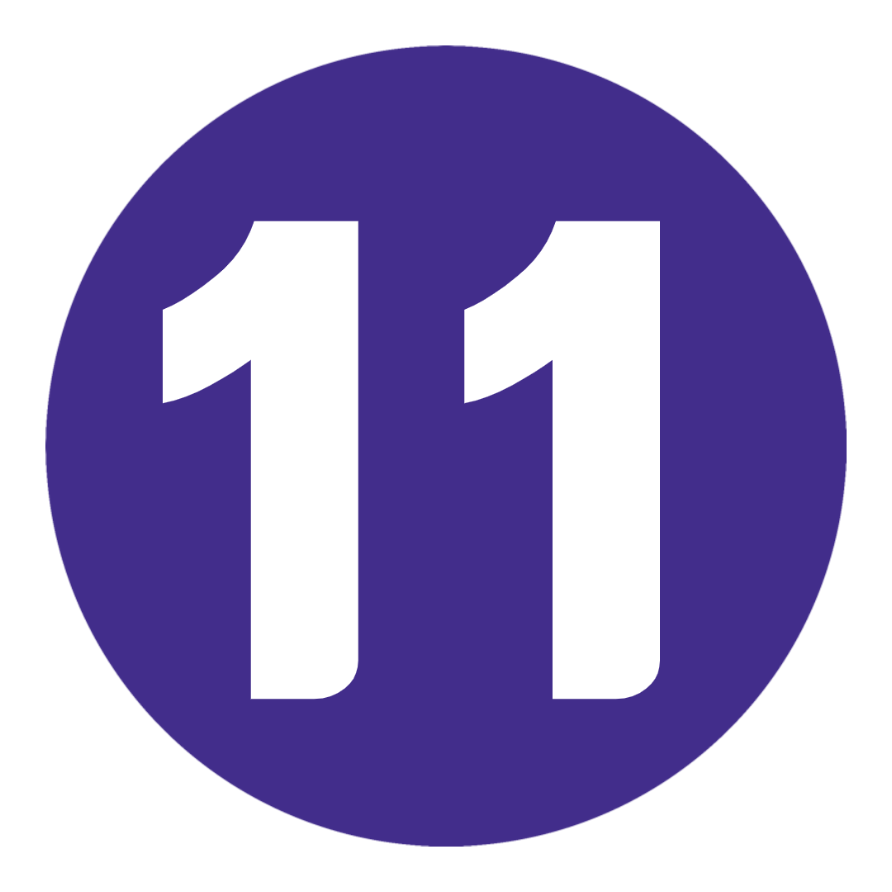 베니스에서 오스트리아 잘츠부르크로
오늘: 우리는 잘츠부르크로 향하는 코스를 정하고 있습니다. 슈트루델(strudel)과 사운드 오브 뮤직(Sound of Music)보다 훨씬 더 많은 이 곳은 모든 웅장한 바로크 양식의 건물에 우아함이 새겨져 있습니다. 우리는 전문가 트립 리더와 함께 도보 여행을 통해 미라벨 정원, 모차르트의 생가, 호엔잘츠부르크 요새, 대성당 등을 둘러볼 것입니다. 당신이 오늘 밤에 일어나는 일은 100% 당신에게 달려 있습니다. 배고파? 현지 레스토랑에서 자리를 잡고 와이너 슈니첼을 파인트에 Ottakringer 파인트와 함께 씻어 내십시오.
키워드 아침밥 + 잘츠부르크의 도보여행 -
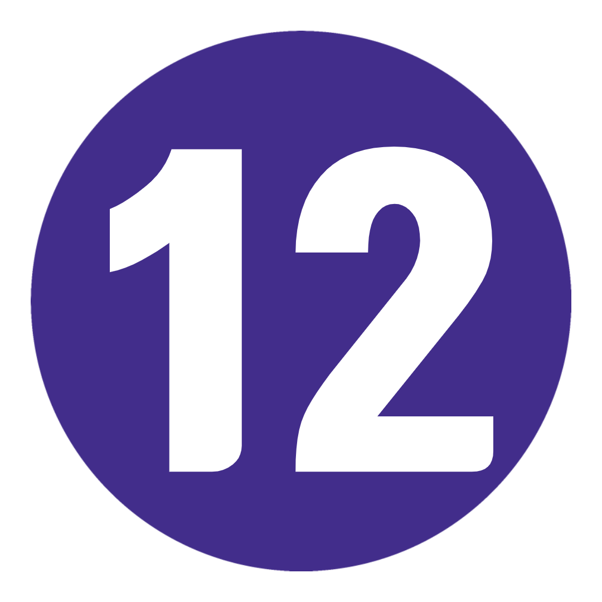 잘츠부르크
일어나 빛을 발하다 – 오스트리아 알프스가 기다리고 있습니다! 이곳은 눈광의 궁극의 환상이며 하루 종일 마음껏 부숴버릴 수 있습니다. 초보자든 노련한 프로이든 상관없이 여행 리더에게 가장 적합한 슬로프를 요청한 다음 파우더를 쳐보세요! 아니면 그냥 편안히 앉아 고풍스러운 고산 풍경에 둘러싸인 핫 초콜릿을 홀짝이며 하루를 즐기십시오. 100% 당신에게 달려 있습니다. 차라리 잘츠부르크에 머무르시겠습니까? 케이블카를 타고 성으로 올라갑니다. 모차르트의 출생지를 확인하십시오. 성 베드로 지하 묘지를 방문하십시오. 또는 사운드 오브 뮤직 투어를 계획하세요. 면책 조항: 남은 여행 동안 '사슴'이 될 것입니다. 하루가 끝나기 전에 mozartkugel을 시도하십시오. 저희를 믿으세요.
키워드 아침밥
추가 옵션 알프스에서 스키: €150부터 -
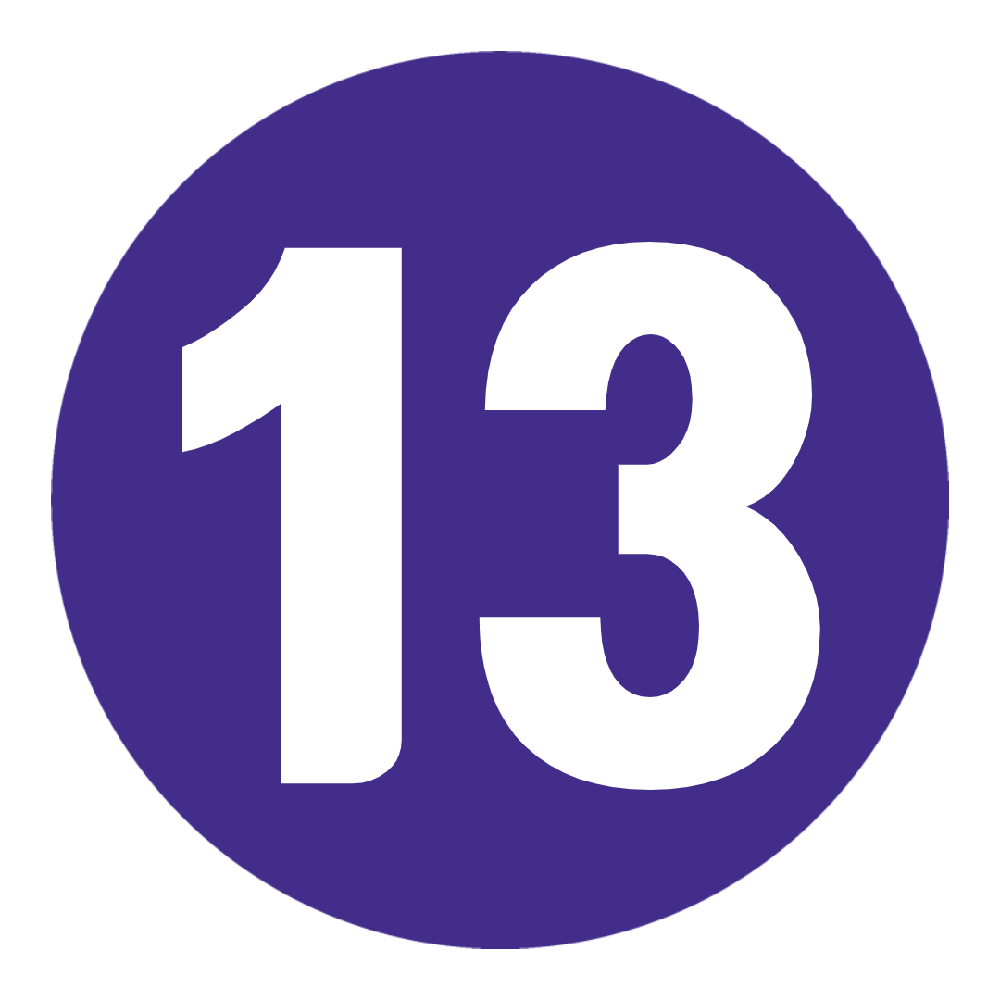 잘츠부르크-비엔나
비엔나가 무엇으로 유명한지 짐작할 수 있다면 10점. 음악가. 그랜드 커피 하우스. 그리고 슈트루델(응!). 오페라 하우스(Opera House), 호프부르크 궁전(Hofburg Palace), 박물관 지구(Museum Quarter) 및 링슈트라세(Ringstrasse)와 같은 곳을 운전하면서 마음을 사로잡을 준비를 하십시오. 그런 다음: 오후는 당신의 것입니다. 박물관 지구를 깊이 탐험하십시오. 프로이트(Freud), 트로츠키(Trotsky), 레닌(Lenin)과 같은 사람들이 어울리곤 했던 카페 센트럴(Cafe Central)로 가십시오. 또는 옵션 콘서트에서 비엔나 체임버 오케스트라가 연주하는 모차르트와 바흐의 감미로운 소리를 즐겨보세요. 당신을 봐, 너무 문화.
키워드 아침밥 + 비엔나의 드라이브 투어
추가 옵션 사운드 오브 비엔나 오케스트라 티켓: €40부터 / 사운드 오브 비엔나 오케스트라 티켓(저녁 포함): €62부터 -
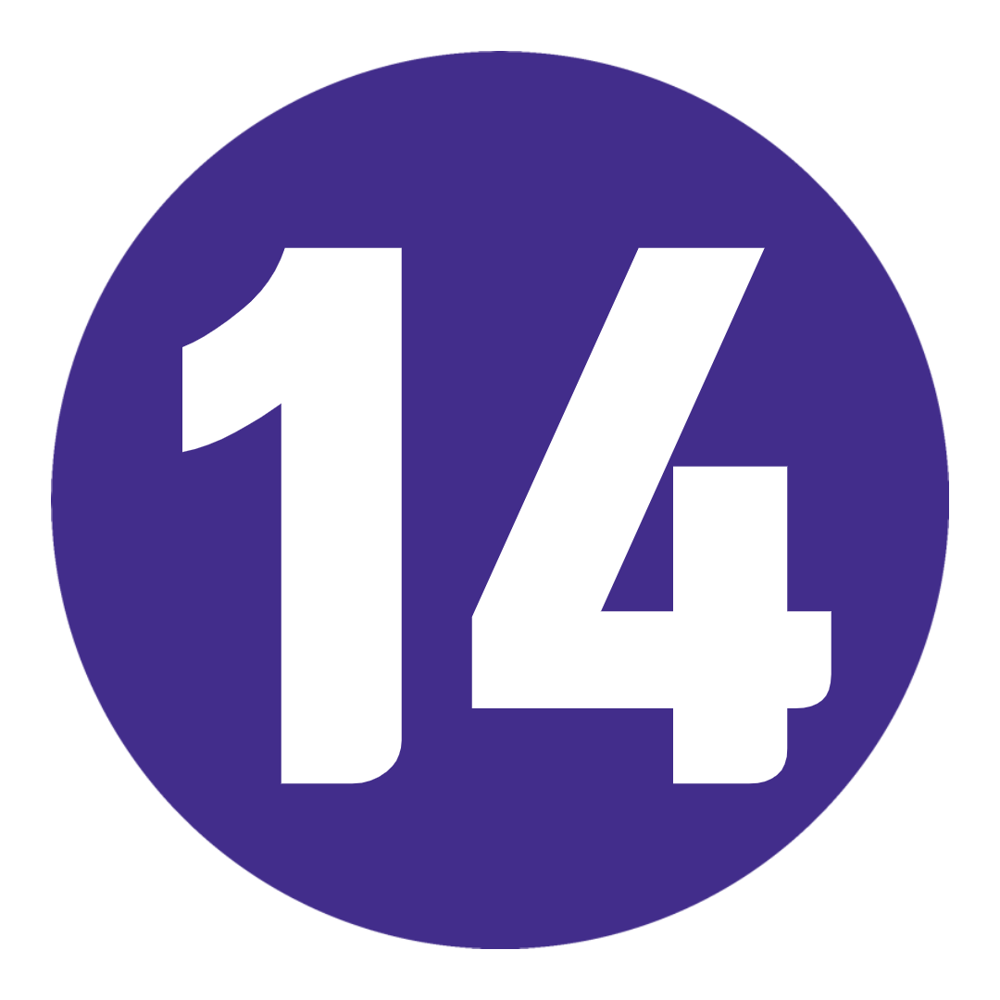 비엔나에서 슬로바키아 브라티슬라바를 거쳐 헝가리 부다페스트로
오늘 첫 번째: 슬로바키아의 피트 스톱. 브라티슬라바 성의 모든 탁 트인 전망을 확인하고 고딕 양식의 구시가지를 거닐며 점심을 먹습니다. 팁: kapustnica(양배추 수프) 또는 bryndzové pirohy(슬로바키아식 만두)로 몸을 따뜻하게 하세요. 그때? 부다와 페스트의 쌍둥이 도시. 우리는 운전기사가 운전하는 도시의 드라이브 투어에서 Chain Bridge, Castle District, Heroes' Square 및 House of Terror를 지나게 될 것입니다. 나중에 우리는 다뉴브 강을 따라 디너 크루즈가 포함되어 한 단계 높은 수준으로 올릴 것입니다. 부다 성과 국회의사당은 크리스마스처럼 더욱 멋지게 보입니다. 저희를 믿으세요.
키워드 아침밥 + 공식 만찬 + 브라티슬라바 오리엔테이션 + 부다페스트 드라이빙 투어 + 다뉴브 강 크루즈 -
 부다페스트
당신은 탐험의 자유를 원했습니다 – 여기 있습니다. 중앙시장회관에서 확인하세요. 유대인 지구를 탐험하세요. Flippermúzeum에서 핀볼을 플레이하세요. House of Terrors에서 끔찍한 교육을 받으십시오. 익명의 동상을 사냥하십시오. Széchenyi Thermal Baths의 따뜻한 치료 물에 몸을 담그십시오. 또는 부다 성으로 가서 어부의 요새에서 모든 전망을 확인하십시오. 오늘 밤, 굴라시, 치킨 파프리카시, 랑고스, 도보스 케이크와 같은 현지 음식에 빠져보세요. 당신이 파프리카를 좋아하기를 바랍니다. 그들은 여기 파프리카에 집착하고 있습니다. 아니면 원래의 루인 바 중 한 곳에서 멋쟁이들과 어울리세요. 우리의 제안? pálinka(전통 과일 브랜디)를 맛보십시오. 이것은 당신의 속을 따뜻하게 안아주는 것과 같습니다.
부다페스트
당신은 탐험의 자유를 원했습니다 – 여기 있습니다. 중앙시장회관에서 확인하세요. 유대인 지구를 탐험하세요. Flippermúzeum에서 핀볼을 플레이하세요. House of Terrors에서 끔찍한 교육을 받으십시오. 익명의 동상을 사냥하십시오. Széchenyi Thermal Baths의 따뜻한 치료 물에 몸을 담그십시오. 또는 부다 성으로 가서 어부의 요새에서 모든 전망을 확인하십시오. 오늘 밤, 굴라시, 치킨 파프리카시, 랑고스, 도보스 케이크와 같은 현지 음식에 빠져보세요. 당신이 파프리카를 좋아하기를 바랍니다. 그들은 여기 파프리카에 집착하고 있습니다. 아니면 원래의 루인 바 중 한 곳에서 멋쟁이들과 어울리세요. 우리의 제안? pálinka(전통 과일 브랜디)를 맛보십시오. 이것은 당신의 속을 따뜻하게 안아주는 것과 같습니다.
키워드 아침밥 -
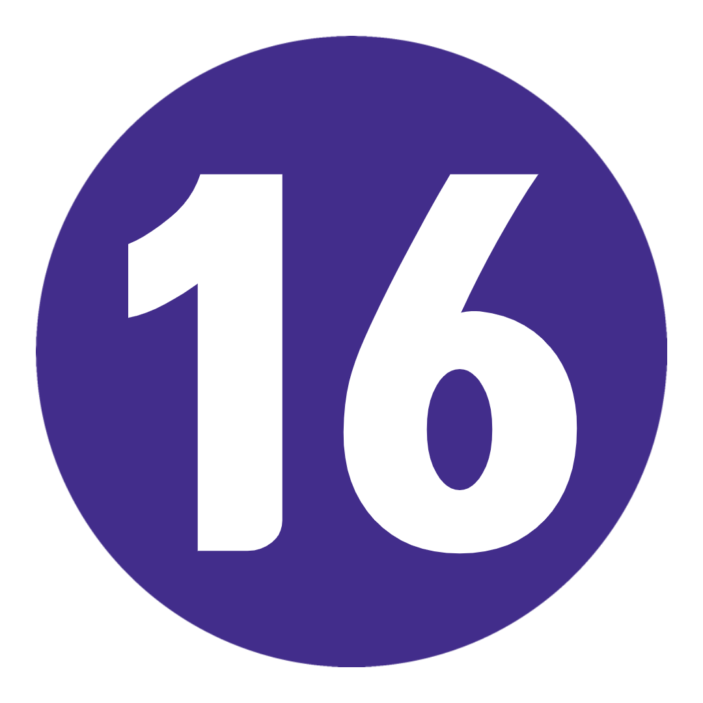 부다페스트에서 폴란드 크라쿠프까지
전설에 따르면 크라쿠프를 건설하려면 용을 물리쳐야 했습니다. 일반적인 의회 승인 왕실보다 조금 더 강하다고요? 오늘의 도보 여행에서 폴란드의 고동치는 심장과 유럽에서 가장 큰 중세 마을 광장에 대해 알아보세요. 그때? Fleetwood의 조언을 받아들이고 자신의 길을 가십시오. 바벨 성(Wawel Castle)에서 역사 지식을 채우고, 유대인 지구(Jewish Quarter)의 기발한 카페와 부티크를 둘러보고, 쉰들러 박물관(Schindler's Museum)으로 가거나(대기할 준비를 하십시오), 지역 명소를 찾아 쌓인 피에로기 접시에 들러보세요.
키워드 아침밥 + 크라쿠프의 도보 여행 + 크라쿠프 지하철 티켓 -
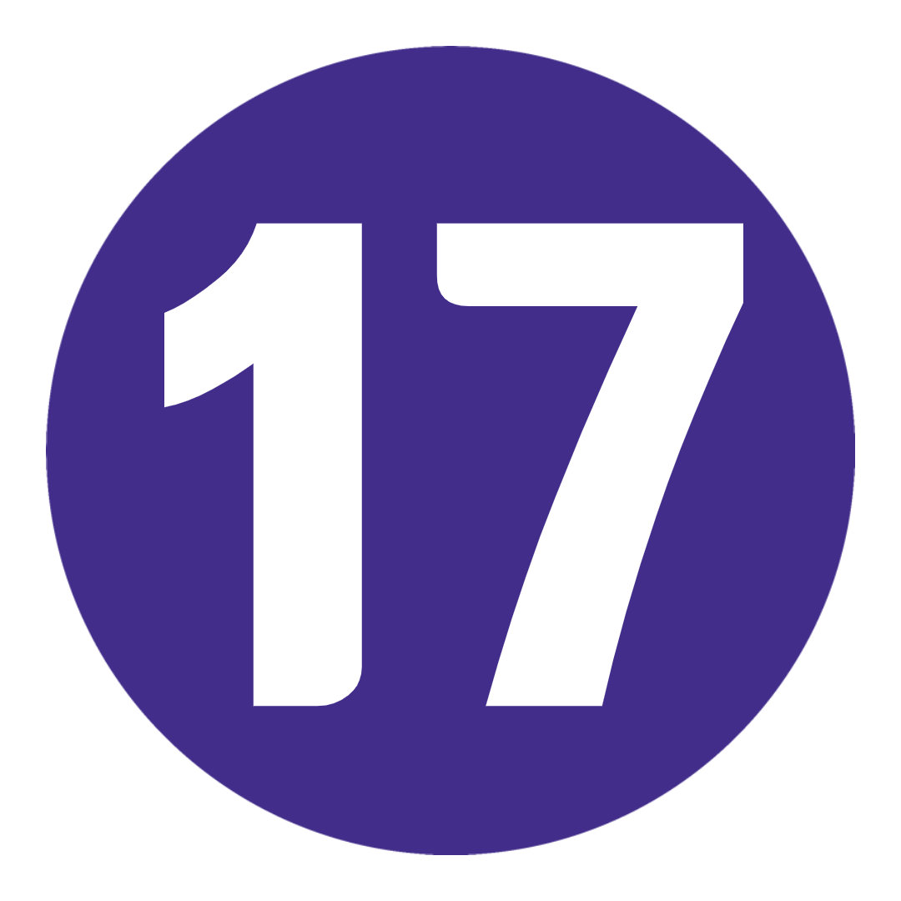 크라쿠프
더 깊이 탐구해야 하는 날입니다. 제안이 필요하십니까? 유대인 지구(Jewish Quarter)의 중심부에 있는 함사로 가서 '후무스와 행복(Hummus and Happiness)'을 먹고 유네스코에 등재된 클로스 홀(Cloth Hall)에서 호박을 구입하세요. 아니면 현지인처럼 하고 오크라글락(Okraglak)으로 가서 군침이 도는 길거리 음식을 먹습니다. 자피에칸키는 필수 코스입니다! 다음: 보드카 시간입니다. 선택적인 시음 투어에서 현지 가이드와 함께 자갈길을 거닐며 폴란드 보드카의 역사를 배우고 이동하면서 몇 가지 맛을 낸 품종을 시음해 보세요. 이 재료는 크랜베리 주스와 섞기 위한 것이 아닙니다. 저희를 믿으세요. 윙윙거리는 느낌? Przypiecek는 당신의 이름이 적힌 24시간 피에로기 장소입니다.
키워드 아침밥
추가 옵션 보드카 시음: PLN 149부터 -
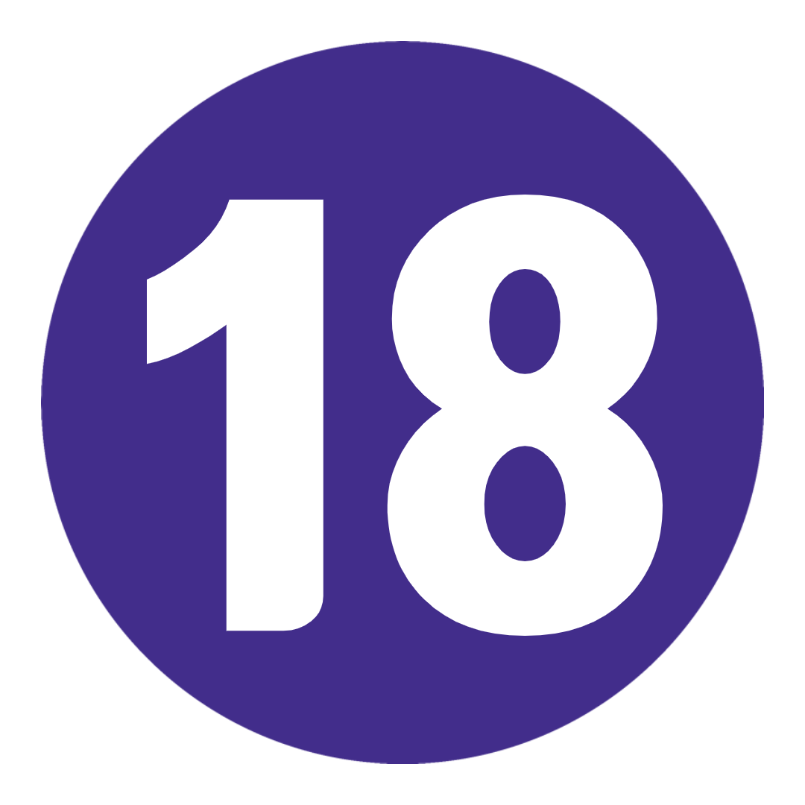 크라쿠프에서 체코 프라하까지
첨탑이 가득한 스카이라인과 신비로운 프라하의 거리를 향해! 우리의 여행 리더가 세계에서 가장 큰 고대 성을 지나 중세 카를교를 가로질러 바츨라프 광장을 거닐며 우리를 이 그림 같은 완벽한 도시에 대해 알게 됩니다. 갱단과 함께 맛있는 저녁 식사를 하기 전에 매시간 600년 된 천문 시계가 진행하는 기발한 쇼를 시청해 보세요. 오늘 밤에는 전통 펍으로 가서 유명한 체코 맥주를 맛보거나 (12월에 이곳에 온다면) 구시가지 광장의 거대한 크리스마스 트리 아래에서 mulled 와인으로 몸을 녹이세요.
키워드 아침밥 + 공식 만찬 + 프라하의 도보 여행 + 프라하 지하철 티켓 -
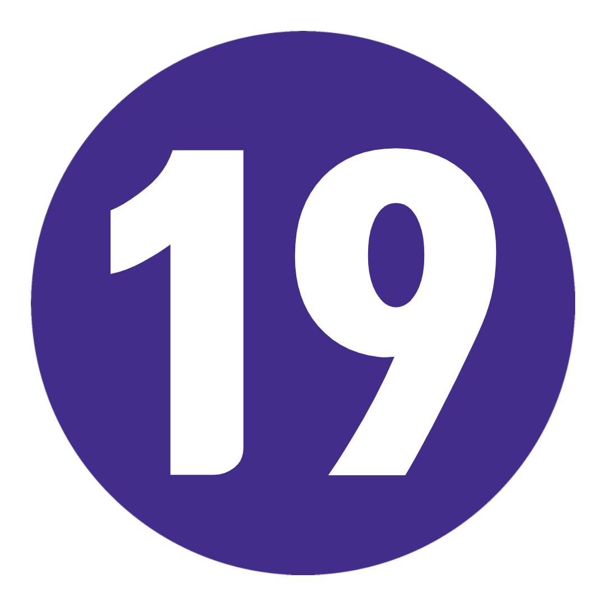 프라하
맞습니다. 여러분의 하루, 여러분의 방식입니다. 그러니 도라처럼 만들어 탐험을 해보세요. John Lennon 벽을 확인하십시오. 공산주의 박물관에서 역사에 흠뻑 빠져보세요. 모든 전망을 보려면 케이블카를 타고 페트린 힐(Petrin Hill)을 올라갑니다. 아니면 구시가 광장에 줄지어 늘어선 노점상 중 한 곳에서 맛있는 구운 돼지고기 롤을 드셔보세요. 약간의 홉 감정가가 되어보고 싶으신가요? 오늘 오후에 선택 가능한 맥주 시음회를 놓치지 마세요. 또는 trdelník의 설탕으로 채워진 서빙으로 내부 뚱뚱한 아이를 기쁘게하십시오. 생각해보세요: 계피 설탕으로 코팅된 불에 구운 페이스트리 – 누텔라를 추가하면 꿈의 디저트가 완성됩니다. * 턱에서 침을 닦는다 *
키워드 아침밥
추가 옵션 프라하 현지 맥주 시음: CZK 800부터 -
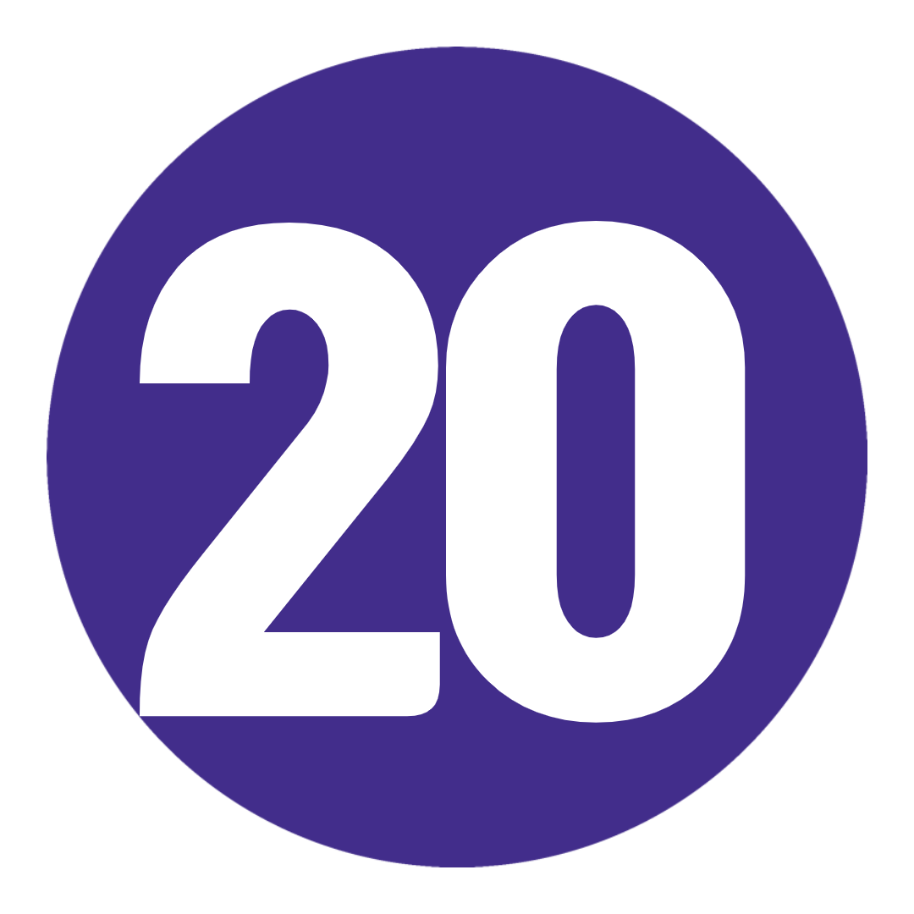 프라하에서 드레스덴을 경유하여 독일 베를린으로
하나의 맥주 수도에서 다음 맥주로. 베를린으로 향하는 길을 만들기 전에 800년 된 드레스덴에 대해 알아보세요. 다른 어느 곳보다 1인당 커리부어스트와 더 많은 힙스터를 준비하세요. 베를린 장벽(Berlin Wall), 박물관 섬(Museum Island), 홀로코스트 박물관(Holocaust Museum), 알렉산더 광장(Alexanderplatz)을 포함한 주요 명소를 둘러보기 위해 운전해 드립니다. 그런 다음: 오늘 저녁 식사는 우리에게 있습니다. 프로스트!
키워드 아침밥 + 공식 만찬 + 복원된 도시 드레스덴의 오리엔테이션 투어 + 베를린의 드라이브 투어 -
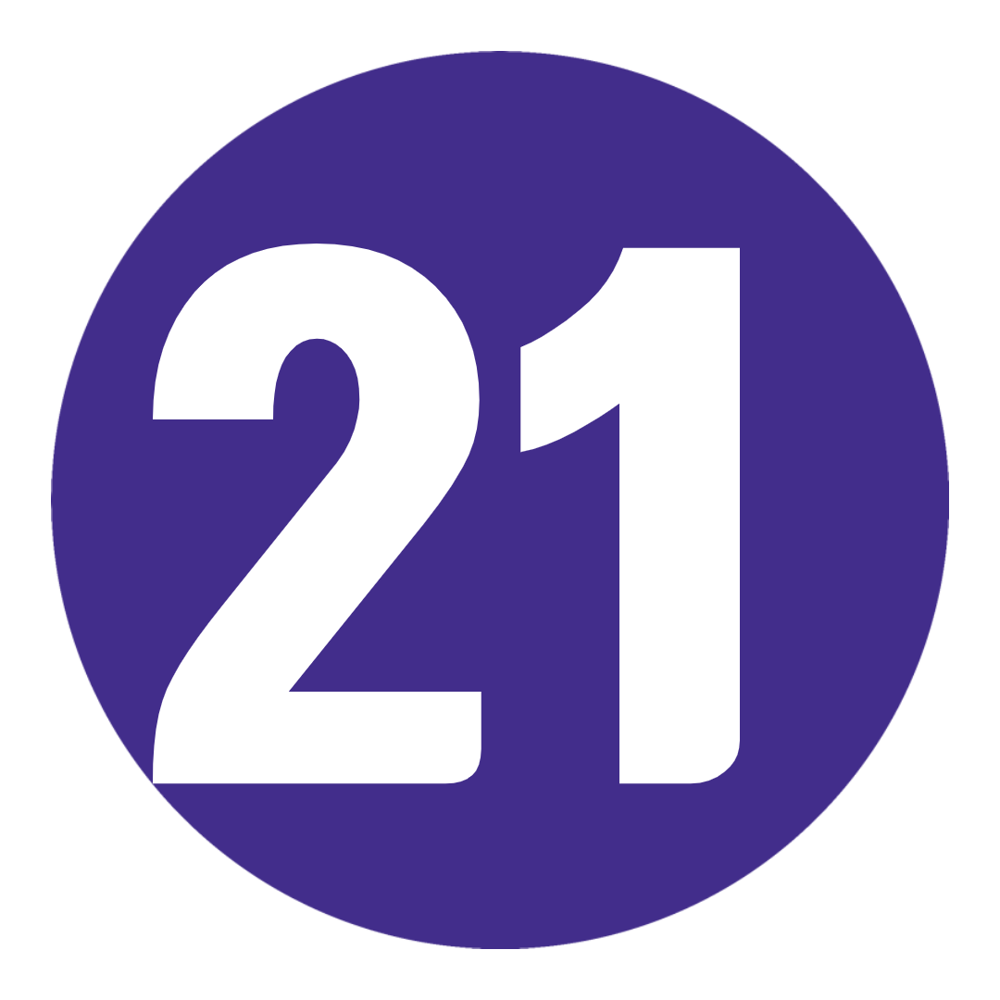 베를린
여기 24시간 있습니다. 최대한 활용하다. 우리의 조언? 지루하지 않은 역사적인 도보 여행을 선택하십시오. 나치 통치하의 도시가 어땠는지 현지 통찰력을 얻고 Reichstag, Checkpoint Charlie 및 Brandenburg Gate와 같은 것을 확인하십시오. 또한 나중에 여가 시간을 보낼 장소에 대한 최신 정보를 얻으십시오. 또는 멋진 AF 음식 투어에서 이러한 미뢰를 최고의 테스트에 적용하십시오. 우리는 케밥, 패스트리, 더 많은 카레부어스트, 피에로기와 현지 맥주(당신은 결국 독일에 있습니다)에 대해 이야기하고 있습니다. 오늘 밤, 이 도시의 밤문화가 정말 과대 광고에 부응하는지 확인할 시간입니다.
키워드 아침밥
추가 옵션 제3제국 도보 투어: €12부터 / 베를린 음식 투어: €35부터 -
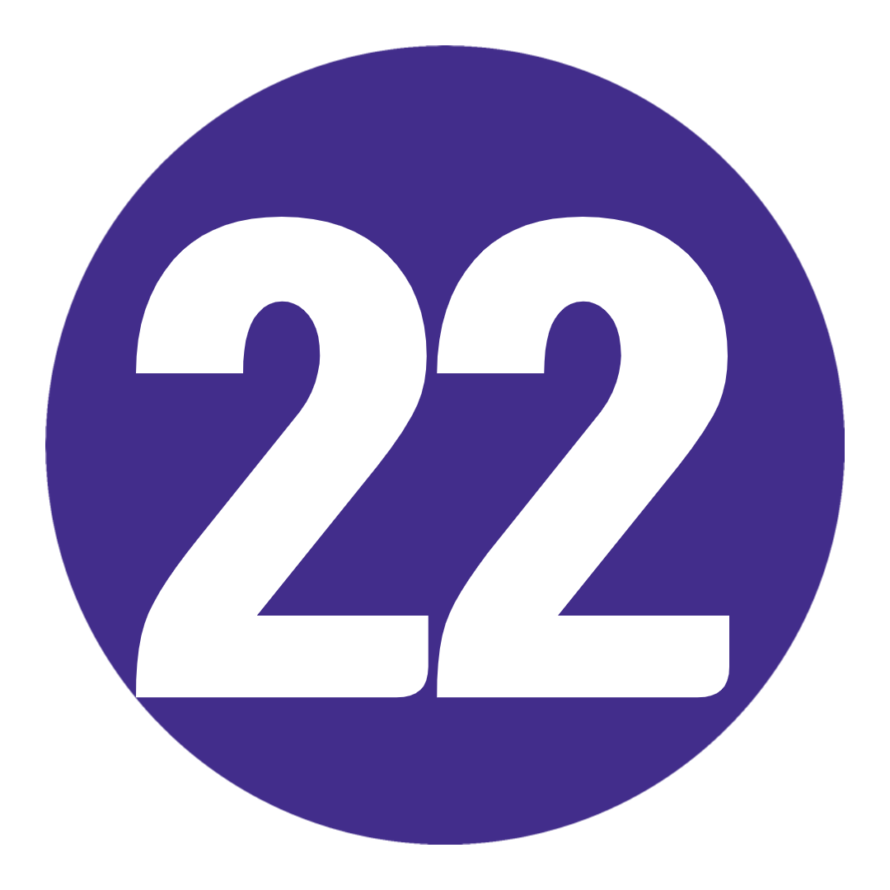 베를린-암스테르담,네덜란드
우리의 여행은 끝이 날지 모르지만 아직 끝나지 않았습니다! 우리는 오늘 암스테르담에 눈을 떴습니다. 짐을 버리고 자갈을 치세요. 담 광장, 왕궁, 국립 기념물이 기다리고 있습니다. 오늘 밤 저녁 식사는 선택의 폭이 넓을 것입니다. 네덜란드식 스테이크하우스, 트렌디한 비건 식당, 멋진 일품 요리 메뉴, 그리고 인생 최고의 테이크아웃 핫 칩스입니다. 보장. 나중에 홍등가에서 쇼를 경험할 수 있는 옵션이 있습니다. 또는 실제 네덜란드를 경험하고 싶다면 Proeflokaal Arendsnest로 향하여 100가지가 넘는 현지 맥주와 독특한 군중을 선택하십시오.
키워드 아침밥
추가 옵션 홍등가 쇼: €30부터 -
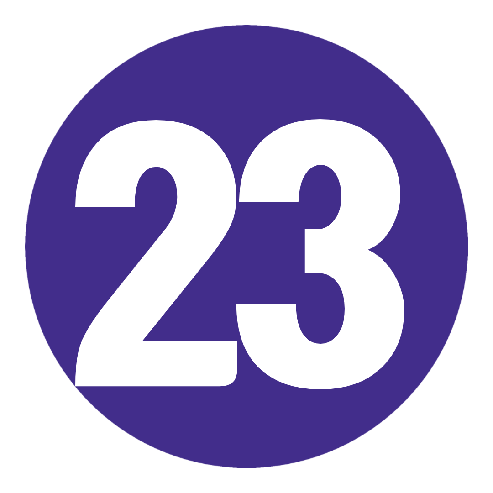 암스테르담
그리고 그렇게, 이것은 우리가 함께한 마지막 하루입니다. FFS는 망설이지 마세요! 선택 가능한 자전거 투어를 통해 지역 주민들과 함께 암스테르담의 상징적인 운하, 다리, 공원을 둘러보세요. 또는 문화 애호가를 위해 안네 프랑크의 집(Anne Frank House)을 방문하여 좀 더 자세히 알아보십시오(사전에 예약하는 것을 잊지 마십시오!). 그렇다면: 여기에 51개의 박물관이 있지만 반 고흐 미술관과 국립 미술관이 목록의 맨 위에 있어야 합니다. 아니면 이 도시의 다양한 지역의 뒷골목에서 길을 잃으십시오. 각 지역은 독특한 분위기를 가지고 있습니다. 무엇을 하시든 오늘 밤 포함된 저녁 식사 시간에 늦지 않도록 하십시오. 우리는 흥겹게 외출할 것입니다!
키워드 아침밥 + 공식 만찬
추가 옵션 암스테르담 자전거 투어: €14부터 -
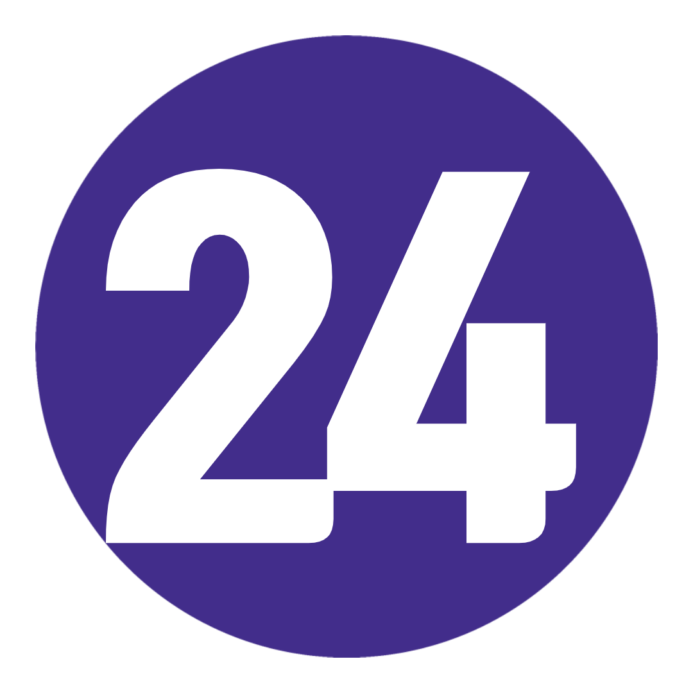 암스테르담에서 영국 런던으로
당신은 음식을 시도했다. 현지인을 만났습니다. 당신은 문화에 예라고 말했다. 예, 역사에. 예, 새롭고 이국적입니다. 당신은 그것을 받아들였습니다. 모두. 하지만 이제 Blighty에게 돌아갈 시간입니다. 누가 다음 모험을 예스라고 말합니까? 계획을 시작합니다.
키워드 아침밥
포함된 항목
|
포함된 경험 |
숙소 |
교통 |
|
파리의 드라이브 투어 |
호스텔에서 18박, 유럽 캠핑장에서 방갈로에서 5박 |
전자 제품 충전을 위한 파워포인트를 포함하여 무료 Wi-Fi와 에어컨이 완비된 현대적인 코치 |
|
선택 활동 |
|
- 파리 카바레 쇼: €65부터 - 센 강 유람선: €10부터 - 파리 자전거 투어: €30부터 - 융프라우('유럽의 정상')로의 경치 좋은 여행: 161.80 - 189.60 CHF - 스위스 알프스 스카이다이빙: 390CHF(추가 보증금 €50)부터 - 경치 좋은 헬리콥터 타기: CHF 195부터(추가 보증금 €20) - 바티칸 시국 가이드 투어: €45부터 - 맞춤형 여행용 티셔츠 또는 후드티 받기: 최저 €21 - 곤돌라 타기: €20부터 - 알프스에서 스키: €150부터 - 사운드 오브 비엔나 오케스트라 티켓: €40부터 - 사운드 오브 비엔나 오케스트라 티켓(저녁 포함): €62부터 - 보드카 시음: PLN 149부터 - 프라하 현지 맥주 시음: CZK 800부터 - 제3제국 도보 여행: €12부터 - 베를린 음식 투어: €35부터 - 홍등가 쇼: €30부터 - 암스테르담 자전거 투어: €14부터 |